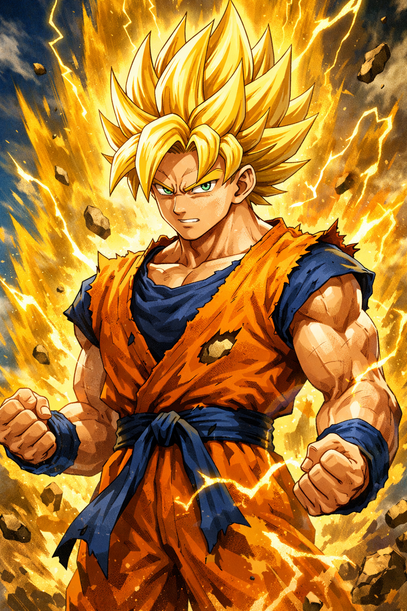
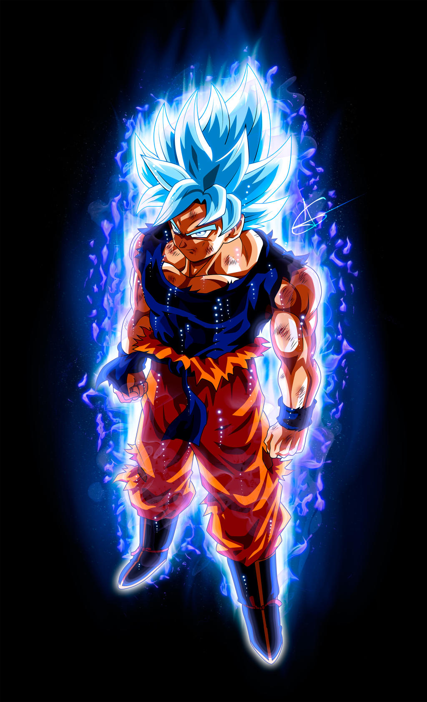
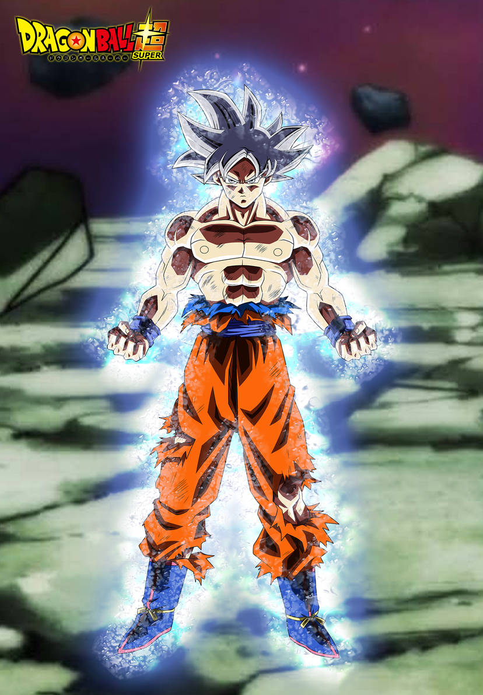
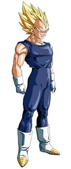
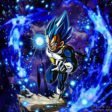

SAIYANS
GOKU
Goku es el protagonista de la serie Dagon Ball. Pertenece a la raza guerrera Saiyayin y es conocido como "el guerrero legendario"
TRANSFORMACIONES
El super saiyayin es la primera transformación de Goku
El super Saiyan blue es una de sus transformaciones mas fuertes
El Ultrainstinto es una transformacion que separa el cuerpo de la mente y hace que ese actue por su cuenta
VEGETA
Vegeta es el segundo protagonista. Es compañero de goku y simepre están compitiendo por quien tiene más poder. Vegeta es conocido como "El príncipe de los saiyayines"
TRANSFORMACIONES
SUPER SAIYAN
El super saiyayin es la primera transformación de Vegeta
MAJIN

Majin vegeta es una versión mejorada del super saiyan, pero es controlado por un villano.
SUPER SAIYAN BLUE
Vegeta ha conseguido dominar esta transformación a la perfección, llevándola a otro nivel. Es su tranformacion más fuerte